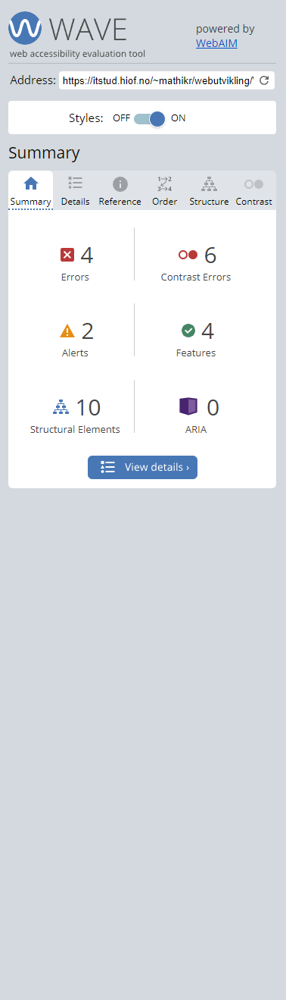
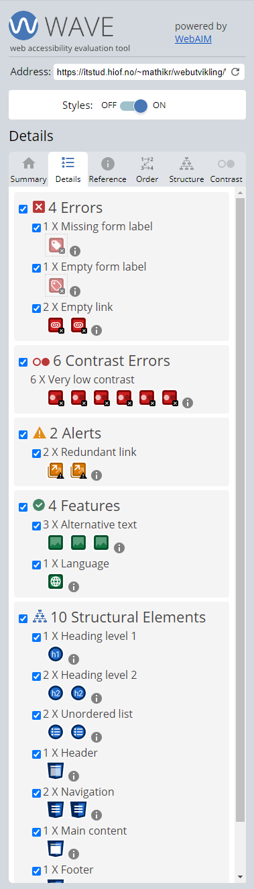
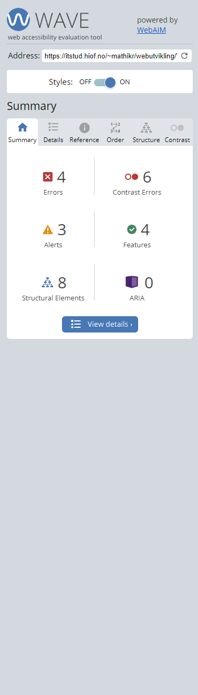
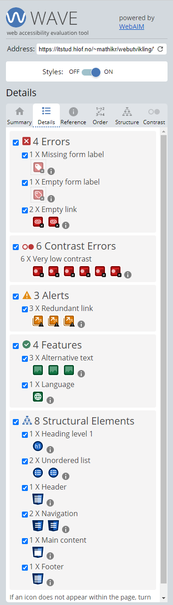
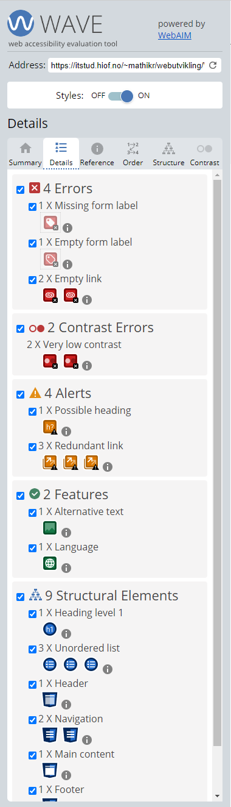

Ytterligere tilgjengelighetsanalyse med WebAIM's WAVE verktøy har identifisert lignende problemer som Lighthouse,
og gir også detaljert informasjon om problemer som krever manuell gjennomgang.
Basert på disse analysene vil vi iverksette tiltak for å forbedre nettstedets tilgjengelighet, inkludert
oppdatering av fargekontraster og forbedring av lenkenavn for skjermlesere.
Index.html Tilgjengelighetsanalyse med WebAIM
WebAIM's WAVE analyse for index.html har identifisert flere tilgjengelighetsproblemer som må adresseres. Det ble
funnet 4 tilgjengelighetsfeil og 6 kontrastfeil, som kan påvirke brukernes evne til å oppfatte innholdet. I
tillegg ble det gitt 2 varsler som bør undersøkes nærmere for å sikre en bedre tilgjengelighetsstandard. På den
positive siden har siden 4 tilgjengelighetsfunksjoner og 10 strukturelle elementer som bidrar til en god
grunnstruktur for tilgjengelighet. Det ble ikke funnet noen ARIA-roller, noe som kan indikere et område for
forbedring, spesielt for dynamisk innhold og avanserte brukergrensesnittkomponenter. Dersom vi ser på den litt mer detaljerte analysen til høyre nedenfor
så kan vi se en litt mer detaljert analyse av sidens elementer. Vi kan blant annet se at "Facebook" og "instagram" linkene in footer ikke er fungerende,
dette er fordi siden ikke har noen instagram/facebookside å linke til. Vi kan også se at WebAIM reagerer på lav kontrast på teksten under bildene fra Pixabay.
Vi har også 2 alerts som omhandler navigasjonen her reagerer WebAIM på at de tre produktsidene linker til hverandre,
men på grunn av at vi ikke har laget noen andre produktsider så er ikke dette noe som vi kan gjøre noe med.


Produkt.html Tilgjengelighetsanalyse med WebAIM
WAVE-verktøyets gjennomgang av 'produkt' siden avdekket en rekke tilgjengelighetsproblemer som er viktige å rette
opp. Det ble oppdaget 4 tilgjengelighetsfeil, 6 kontrastfeil, og 3 varsler som krever ytterligere gjennomgang.
Til tross for disse problemene, påpeker analysen også 4 positive tilgjengelighetsegenskaper og 8 strukturelle
elementer som er korrekt implementert. Igjen reagerer WebAIM på kontrastnivået på teksten som referer til pixabay, hvor bildene er hentet.
Vi ser også de samme varslene rundt navigasjonen som linker til samme side, i tilegg til at elementene i footeren ikke har noen link enda.
For å forbedre siden vil vi adressere disse feilene, spesielt ved å øke kontrasten der det er nødvendig og sikre
at all navigasjon og interaktive elementer er tydelig merket og tilgjengelige.


Handlekurv.html Tilgjengelighetsanalyse med WebAIM
WAVE-analysen for 'handlekurv' siden har påvist 4 tilgjengelighetsfeil, 2 kontrastfeil, og 4 varsler. Disse
resultatene peker på spesifikke områder som trenger forbedringer for å gjøre siden mer tilgjengelig for alle
brukere. Også her kan vi se at beskrivelsene fra pixabay har dårlig fargekontrast.
WebAIM reagerer også på at vi ikke har linket Facebook og Instagram linkene i footer. Det samme gjelder linkene i navigasjonen som linker til samme produkt.html side.
For å forbedre tilgjengeligheten på denne siden, vil vi rette opp i alle identifiserte feil, forbedre
kontrastforholdet mellom tekst og bakgrunn, og sikre at alle interaktive elementer er tydelig merket og
navigerbare.
